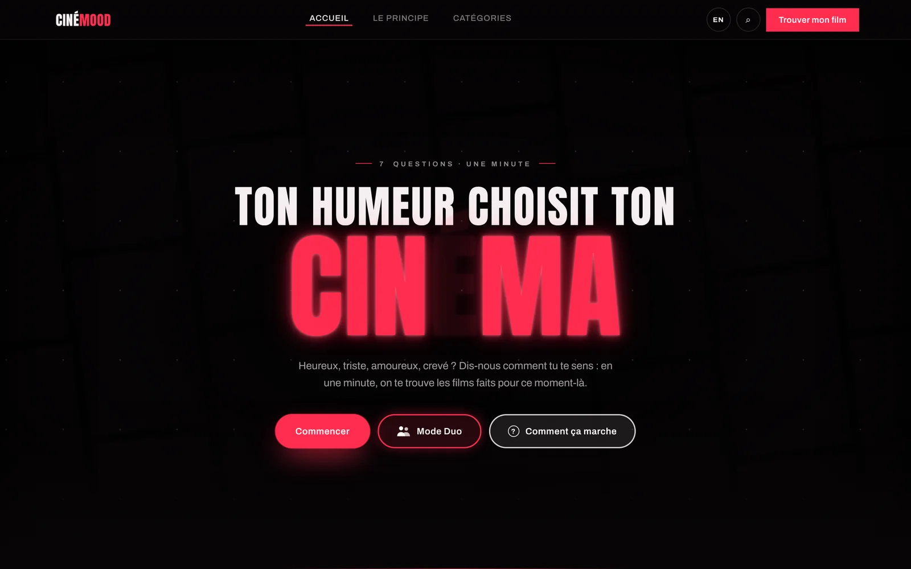

Web app · Identité et produit · 2026
CinéMood
Un site qui choisit votre film à partir de votre humeur. Sept questions, une minute, puis un meilleur choix et quatre alternatives, chacune justifiée. J’ai tout conçu : le concept, l’identité néon, le parcours, les textes et la mise en ligne.
- Rôle
- Concept, identité, UX, rédaction, intégration
- Typographies
- Anton, Archivo
- Palette
- #070506
- #FF2D4F
- #F6EEF0